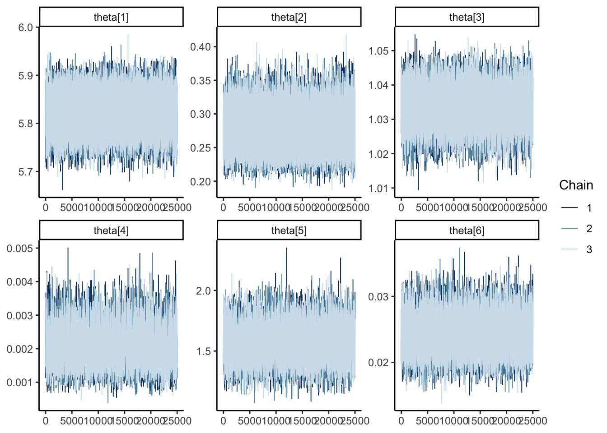
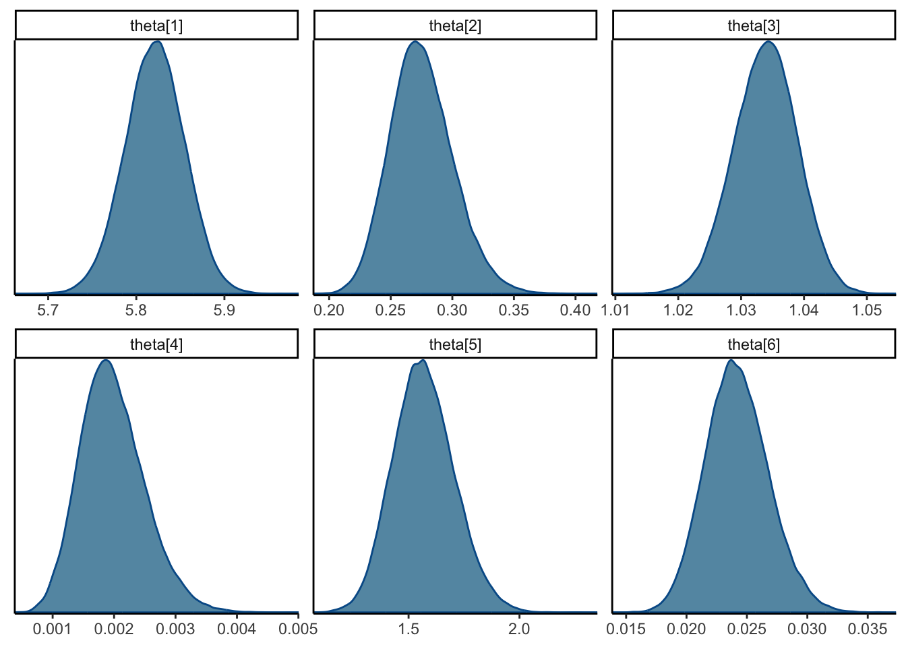

```{r}
#| output: hide
library(tidyverse)
library(ggplot2)
library(rjags)
library(posterior)
library(bayesplot)
library(gt)
theme_set(theme_classic())
```4
Download the marathon data of Section 6.4 from the course webpage. Let \(Y_{ij}\) be the speed of runner \(i\) in mile \(j\). Fit the hierarchical model
\[ \begin{aligned} Y_{i1} &\sim \mathrm{Normal}(\mu_i, \sigma_0^2) \\ Y_{ij} \vert Y_{ij-1} &\sim \mathrm{Normal}\left(\mu_i + \rho_i(Y_{ij-1} - \mu_i), \sigma_i^2\right) \\ \mu_i &\sim \mathrm{Normal}(\theta_1, \theta_2) \\ \rho_i &\sim \mathrm{Normal}(\theta_3, \theta_4) \\ \sigma_i^2 &\sim \mathrm{InvGamma}(\theta_5, \theta_6) \end{aligned} \]
load(url("https://www4.stat.ncsu.edu/~bjreich/BSMdata/BostonMarathon2016.RData"))- Draw a DAG for this model and give an interpretation for each parameter in the model.
Solution:
- Select uninformative prior distributions for \(\theta_1, \dots, \theta_6\).
Solution:
Since \(\theta_1\) and \(\theta_3\) are both parameters for the mean of normal distributions, it makes sense to give them normal priors. To make them uninformative we can give them large variances, such as for example
\[ \theta_1, \theta_3 \sim \mathrm{Normal}(0, 10^4). \]
\(\theta_2\) and \(\theta_4\) are both variances in normal distributions, so we could give them Inverse Gamma priors. To make them uninformative we make the prior variance high, for example
\[ \theta_2, \theta_4 \sim \mathrm{InvGamma}(0.001, 0.001) \]
\(\theta_5\) and \(\theta_6\) are the shape and scale parameters in an Inverse Gamma distribution. We know that they are both positive and unbounded, so we could for example give them both Gamma priors with high variance, for example
\[ \theta_5, \theta_6 \sim \mathrm{Gamma}(0.001, 0.001) \]
- Fit the model in
JAGSusing three chains each with 25,000 iterations and thoroughly assess MCMC convergence for the \(\theta_j\).
Solution:
First we prepare the data.
men <- Marathon_male$SPEED_mile |>
as_tibble() |>
rownames_to_column("runner") |>
pivot_longer(c(-runner), names_to = "mile", values_to = "speed") |>
mutate(
mile = parse_number(mile),
runner = parse_number(runner)
)
women <- Marathon_female$SPEED_mile |>
as_tibble() |>
rownames_to_column("runner") |>
pivot_longer(c(-runner), names_to = "mile", values_to = "speed") |>
mutate(
mile = parse_number(mile),
runner = parse_number(runner),
runner = runner + max(men$runner)
)
d <- bind_rows(men, women)
Y <- rbind(Marathon_male$SPEED_mile, Marathon_female$SPEED_mile)
jags_data <- list(
N_obs = ncol(Y),
N_runners = nrow(Y),
Y = Y
)Then we code the model and sample from its posterior.
model_string <- textConnection("model{
for (i in 1:N_runners) {
mu[i] ~ dnorm(theta[1], inv_theta2)
rho[i] ~ dnorm(theta[3], inv_theta4)
tau[i] ~ dgamma(theta[5], theta[6])
sigma[i] <- pow(tau[i], -1)
Y[i, 1] ~ dnorm(mu[i], tau0)
for (j in 2:N_obs) {
Y[i, j] ~ dnorm(mu[i] + rho[i] * (Y[i, j - 1] - mu[i]), tau[i])
}
}
tau0 ~ dgamma(theta[5], theta[6])
sigma0 <- pow(tau0, -1)
theta[1] ~ dnorm(0, 0.0001)
theta[3] ~ dnorm(0, 0.0001)
inv_theta2 ~ dgamma(0.001, 0.001)
theta[2] <- pow(inv_theta2, -1)
inv_theta4 ~ dgamma(0.001, 0.001)
theta[4] <- pow(inv_theta4, -1)
theta[5] ~ dgamma(0.001, 0.001)
theta[6] ~ dgamma(0.001, 0.001)
}")
model <- jags.model(
model_string,
jags_data,
n.chains = 3
)Compiling model graph
Resolving undeclared variables
Allocating nodes
Graph information:
Observed stochastic nodes: 6276
Unobserved stochastic nodes: 1097
Total graph size: 25586
Initializing modelupdate(model, 10000)
samples <- coda.samples(
model,
variable.names = c("mu", "sigma", "tau", "rho", "theta", "sigma0", "Y[5,11]", "Y[5,12]", "Y[5,13]"),
n.iter = 25000
)
posterior_jags <- samples |>
as_draws_df()The table and trace plots below show us that the chains seem to have converged.
posterior_jags |>
subset_draws(variable = "theta") |>
summarise_draws(rhat, ess_bulk, ess_tail) |>
gt() |>
fmt_number()| variable | rhat | ess_bulk | ess_tail |
|---|---|---|---|
| theta[1] | 1.00 | 32,069.71 | 66,128.52 |
| theta[2] | 1.00 | 36,511.81 | 52,096.65 |
| theta[3] | 1.00 | 8,356.18 | 19,985.41 |
| theta[4] | 1.00 | 3,403.53 | 6,340.33 |
| theta[5] | 1.00 | 6,853.46 | 14,393.68 |
| theta[6] | 1.00 | 7,346.81 | 15,732.06 |
posterior_jags |>
mcmc_trace(
regex_pars = "theta"
)
- Are the data informative about the \(\theta_j\)? That is, are the posterior distributions more concentrated than the prior distributions?
Solution:
To check whether the daa are informative, we compare the prior variance of each \(\theta_j\) to its posterior variance. If the posterior variance is much smaller than the prior variance we can conclude that the data are informative for the parameter
sds <- posterior_jags |>
subset_draws(variable = "theta") |>
summarise_draws() |>
pull(sd) |>
as.numeric()
tribble(
~theta, ~prior_variance,
"theta[1]", 100,
"theta[2]", Inf,
"theta[3]", 100,
"theta[4]", Inf,
"theta[5]", 1000,
"theta[6]", 1000
) |>
mutate(
posterior_variance = sds^2
)# A tibble: 6 × 3
theta prior_variance posterior_variance
<chr> <dbl> <dbl>
1 theta[1] 100 0.00115
2 theta[2] Inf 0.000653
3 theta[3] 100 0.0000259
4 theta[4] Inf 0.000000272
5 theta[5] 1000 0.0189
6 theta[6] 1000 0.00000669 - In light of c. and d., are there any simplifications you might consider and if so, how would you compare the full and simplified models?
In addition to the results from c. and d., we can also look at the marginal densities of each \(\theta_j\). In the figure below, we see that \(\theta_4\), the variance of the normal distribution from which we draw \(\rho_i\) is very small in comparison to \(\theta_3\) the mean of the normal distribution.
Our results from c. tell us that this parameter is well estimated.
The results in d. tell us that our priors aren’t artificially making this posterior density narrow.
posterior_jags |>
mcmc_dens(
regex_pars = "theta"
)
We could thus consider simplifying our model by using one \(\rho\) parameter that is shared by all the participants. Looking at the figure of the posterior density of each \(\rho_i\), it seems like this might work for most participants, but there are some \(\rho_i\) that seem to be different from the rest.
plot_dat <- posterior_jags |>
subset_draws("rho") |>
summarise_draws()plot_dat |>
mutate(
id = parse_number(variable)
) |>
ggplot(aes(id, mean, ymin = q5, ymax = q95)) +
geom_pointrange(
linewidth = 0.5,
size = 0.5
) +
coord_flip() +
labs(
x = "Individual",
y = expression(rho[i]),
title = expression(paste("Individual-specific ", rho[i], " estimates")),
subtitle = "Posterior mean and 95% credible intervals"
)